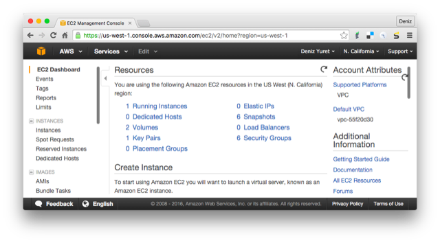
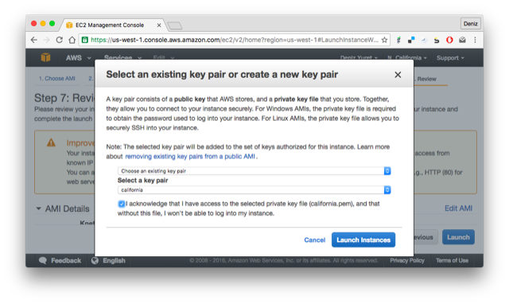

Setting up Knet
Knet.jl is a deep learning package implemented in Julia, so you should be able to run it on any machine that can run Julia. It has been extensively tested on Linux machines with NVIDIA GPUs and CUDA libraries, and it has been reported to work on OSX and Windows. If you would like to try it on your own computer, please follow the instructions on Installation. If you would like to try working with a GPU and do not have access to one, take a look at Using Amazon AWS or Using Microsoft Azure. If you find a bug, please open a GitHub issue. If you would like to contribute to Knet, see Tips for developers. If you need help, or would like to request a feature, please use the knet-users mailing list.
Installation
For best results install (1) Julia, (2) CUDA.jl, (3) Knet.jl in that order. Step (2) can be skipped if you do not need GPU support. An optional step (4) below describes how to interact with the Knet tutorial notebooks.
Julia: Download and install the latest version of Julia from julialang.org. As of this writing the latest version is 1.4.2 and I have tested Knet using 64-bit binaries for Generic Linux on x86, macOS, and Windows.
CUDA.jl: If you are going to use an NVIDIA GPU, start Julia and install CUDA.jl with
using Pkg; Pkg.add("CUDA"). The Julia CUDA stack requires users to have a functional NVIDIA driver, see CUDA.jl installation instructions for detailed requirements. You can test your installation withusing CUDA; CUDA.functional(), if CUDA is not functional, Knet will not be able to use the GPU.Knet: to install Knet start Julia and run
using Pkg; Pkg.add("Knet"). If you have problems with the installation, you can get support from knet-users.Tutorial: The best way to learn Knet is through the included Jupyter notebooks. You need the IJulia package to run the notebooks which can be installed with:
using Pkg; Pkg.add("IJulia"). You can then interact with the tutorial notebooks with:using IJulia, Knet; notebook(dir=Knet.dir("tutorial")). This should open a browser with a list of tutorial notebooks. If you have not used Jupyter before, please take a look at Jupyter notebook tutorials online. Note that the first timenotebook()is run, there may be a long startup time for installations.
Tips for developers
Knet is an open-source project and we are always open to new contributions: bug fixes, new machine learning models and operators, inspiring examples, benchmarking results are all welcome. If you'd like to contribute to the code base, please sign up at the knet-dev mailing list and follow these tips:
- Please get an account at github.com.
- Fork the Knet repository.
- Point Julia to your fork with
using Pkg; pkg"dev git@github.com:your-username/Knet.jl.git". - Make sure your fork is up-to-date.
- Retrieve the latest version of the master branch using
git pullin the Knet directory. - Implement your contribution. This typically involves:
- Creating a git branch.
- Writing your code.
- Adding documentation under doc/src and a summary in NEWS.md.
- Adding unit tests in the test directory and using
Pkg.test("Knet").
- Please submit your contribution using a pull request.
Using Amazon AWS
If you don't have access to a GPU machine, but would like to experiment with one, Amazon Web Services is a possible solution. I have prepared a machine image (AMI) with everything you need to run Knet. Here are step by step instructions for launching a GPU instance with a Knet image (the screens may have changed slightly since this writing):
1. First, you need to sign up and create an account following the instructions on Setting Up with Amazon EC2. Once you have an account, open the Amazon EC2 console and login. You should see the following screen:

2. Make sure you select the "Ohio" region in the upper right corner, then click on AMIs on the lower left menu. At the search box, choose "Public images" and search for "Knet". Click on the latest Knet image (Knet-1.0.0 as of this writing). You should see the following screen with information about the Knet AMI. Click on the "Launch" button on the upper left.

Note: Instead of "Launch", you may want to experiment with "Spot Request" under "Actions" to get a lower price. You may also qualify for an educational grant if you are a student or researcher.
3. You should see the "Step 2: Choose an Instance Type" page. Pick one of the GPU instances (I have tested with the g2 series and the p2 series). Click on "Review and Launch".

4. This should take you to the "Step 7: Review Instance Launch" page. You can just click "Launch" here:

5. You should see the "key pair" pop up menu. In order to login to your instance, you need an ssh key pair. If you have created a pair during the initial setup you can use it with "Choose an existing key pair". Otherwise pick "Create a new key pair" from the pull down menu, enter a name for it, and click "Download Key Pair". Make sure you keep the downloaded file, we will use it to login. After making sure you have the key file (it has a .pem extension), click "Launch Instances" on the lower right.

6. We have completed the request. You should see the "Launch Status" page. Click on your instance id under "Your instances are launching":

7. You should be taken to the "Instances" screen and see the address of your instance where it says something like "Public DNS: ec2-54-153-5-184.us-west-1.compute.amazonaws.com".

8. Open up a terminal (or Putty if you are on Windows) and type:
ssh -i knetkey.pem ec2-user@ec2-54-153-5-184.us-west-1.compute.amazonaws.comReplacing knetkey.pem with the path to your key file and ec2-54-153-5-184 with the address of your machine. If all goes well you should get a shell prompt on your machine instance.
9. There you can type julia, and at the julia prompt using Pkg, Pkg.update() and Pkg.build("Knet") to get the latest versions of the packages, as the versions in the AMI may be out of date:
[ec2-user@ip-172-31-24-60 deps]$ julia
_
_ _ _(_)_ | Documentation: https://docs.julialang.org
(_) | (_) (_) |
_ _ _| |_ __ _ | Type "?" for help, "]?" for Pkg help.
| | | | | | |/ _` | |
| | |_| | | | (_| | | Version 1.0.0 (2018-08-08)
_/ |\__'_|_|_|\__'_| | Official https://julialang.org/ release
|__/ |
julia> using Pkg
julia> Pkg.update()
julia> Pkg.build("Knet")Finally you can run Pkg.test("Knet") to make sure all is good. This should take about 10-15 minutes. If all tests pass, you are ready to work with Knet:
julia> Pkg.test("Knet")
INFO: Testing Knet
...
INFO: Knet tests passed
julia>Using Microsoft Azure
Knet can be used with Azure. For GPU support, you need to create a virtual machine with GPU, for instance Standard_NC6 with Ubuntu18.04 as operating system. Then follow Using Ubuntu18.04.
Using Ubuntu18.04
The CUDA stack can be installed using the following instructions:
################################################################################
##### Prerequisites
################################################################################
sudo apt install make gcc g++ wget
################################################################################
##### driver
################################################################################
# The appropriate driver version can be selected here:
# http://www.nvidia.com/Download/index.aspx
# The following code is for Azure Standard_NC6 machines (K80 GPU)
wget http://us.download.nvidia.com/tesla/440.64.00/NVIDIA-Linux-x86_64-440.64.00.run
sudo sh NVIDIA-Linux-x86_64-440.64.00.run
################################################################################
##### toolkit
################################################################################
# the appropriate toolkit version can be selected here:
# https://developer.nvidia.com/cuda-downloads
# The following code is for Azure Standard_NC6 machines (K80 GPU)
wget http://developer.download.nvidia.com/compute/cuda/10.2/Prod/local_installers/cuda_10.2.89_440.33.01_linux.run
sudo sh cuda_10.2.89_440.33.01_linux.run
# add the following two lines to ~/.bashrc
PATH=$PATH:/usr/local/cuda-10.2/bin
LD_LIBRARY_PATH=$LD_LIBRARY_PATH:/usr/local/cuda-10.2/lib64
sudo reboot now
################################################################################
##### cudnnn
################################################################################
# download cudnn using the browser
# https://docs.nvidia.com/deeplearning/sdk/cudnn-install/index.html
# The following code is for Azure Standard_NC6 machines (K80 GPU)
tar -xzvf cudnn-10.2-linux-x64-v7.6.5.32.tgzsudo cp cuda/include/cudnn.h /usr/local/cuda/include
sudo cp cuda/lib64/libcudnn* /usr/local/cuda/lib64
sudo chmod a+r /usr/local/cuda/include/cudnn.h /usr/local/cuda/lib64/libcudnn*Afterwards Knet can be installed as usual:
julia> using Pkg
julia> Pkg.update()
julia> Pkg.add("Knet")
julia> Pkg.build("Knet")
julia> using Knet; include(Knet.dir("test/gpu.jl"))